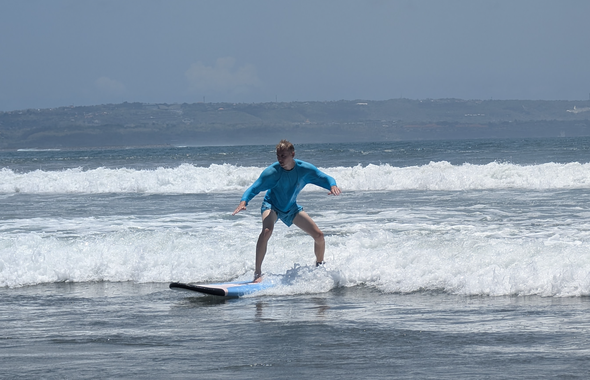

My Hobbies
Karate

Karate has been the cornerstone of my life since I was six years old, shaping not just my physical abilities but my entire worldview. My dedication to this martial art has led to remarkable achievements, including becoming the FSKA world champion in kumite for the under-25 category in 2017-2018, and earlier claiming three WTKA world titles in kumite, kata, and team kumite in the 10-12 age group during 2009-2010. Beyond the competitions and accolades, karate represents my deepest passion—a discipline that has taught me respect, perseverance, and a profound appreciation for Japanese culture and the martial arts philosophy.
Travelling

Exploring the world and immersing myself in diverse cultures has become an integral part of who I am. Having visited over 30 countries throughout my life, my most transformative journey was a five-month backpacking adventure across Asia, where I explored ten different countries. This extended trip wasn't just about seeing new places; it was about truly experiencing how different people live, think, and celebrate life. From bustling street markets to countryside villages, each destination offered unforgettable lessons and perspectives that have fundamentally broadened my understanding of the world.
Adrenaline

I thrive on pushing my boundaries through extreme sports that test both courage and composure. Whether free-falling through the sky while skydiving, taking the leap off a bungee platform, or coming face-to-face with sharks during a cage diving experience, these adrenaline-fueled experiences remind me that life's most rewarding moments often lie just beyond our comfort zone. Each challenge conquered reinforces my belief that fear is simply an invitation to grow stronger and more confident.
Surfing
Surfing has become my sanctuary—a perfect blend of challenge and tranquility that brings balance to my life. There's something magical about reading the ocean's rhythm, waiting for the perfect wave, and then harnessing its power for those fleeting moments of pure freedom. Each session leaves me with a profound sense of achievement and satisfaction, while the meditative aspects of being in the water wash away stress and bring a deep sense of relaxation. It's where I find my peace and reconnect with myself.